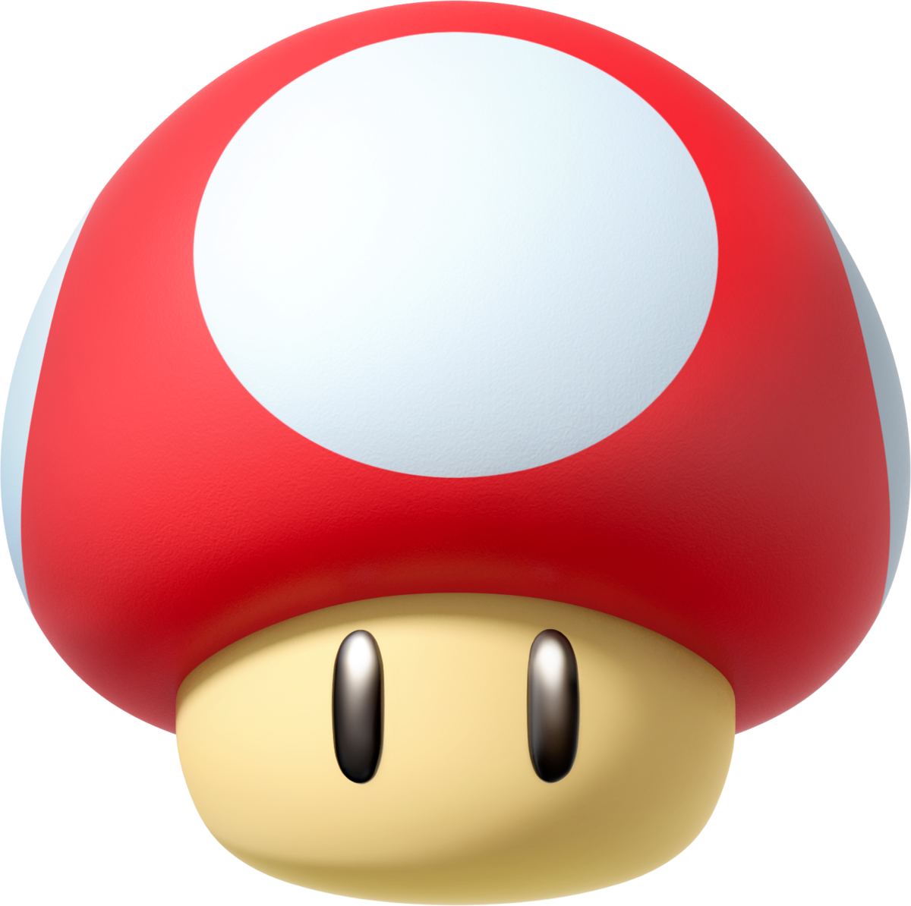
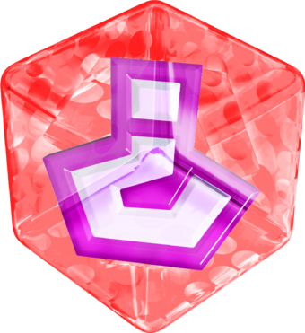
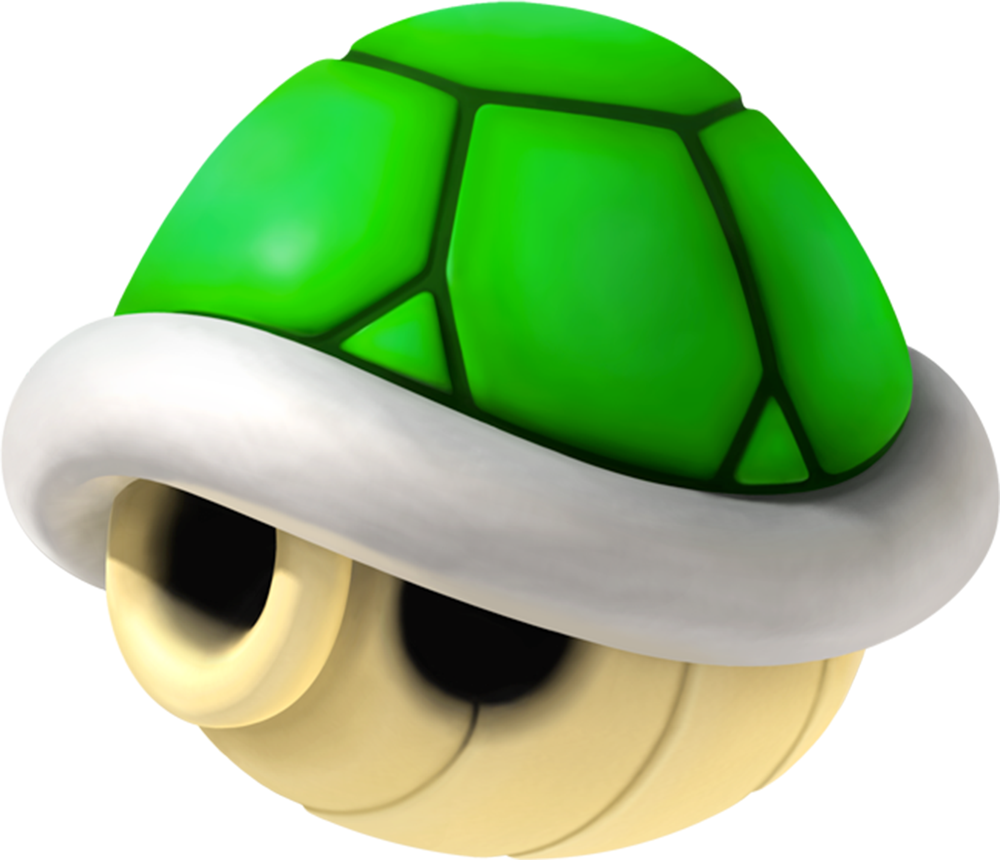

Boost your game with Power-Ups

Banana
Throw bananas at other riders causing them to spin and lose control.

Mushroom
Provides burst of speed and allows the player to drive through off-road surfaces without slowing down.

Fake Item box
When obtained Fake Item box can be used as a trap for other riders causing them to crash .

Shell
Projectile weapon that can be used to shoot Green Shells forward to hit opponents.